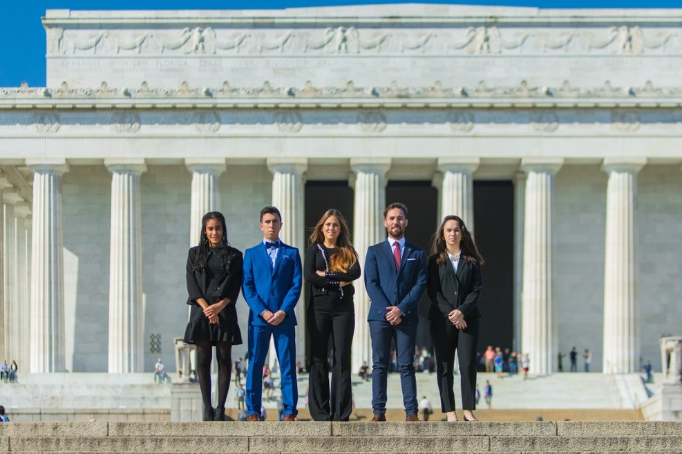
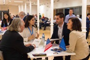
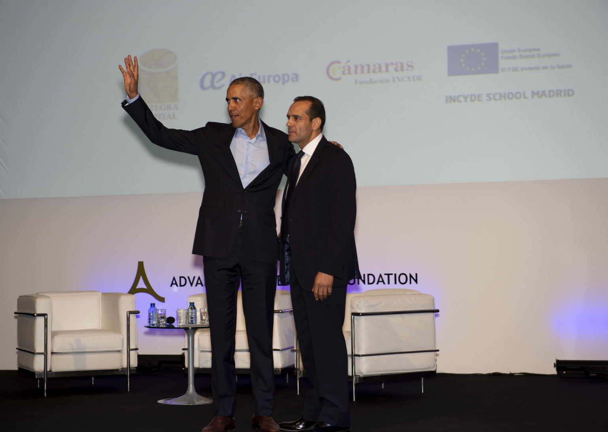
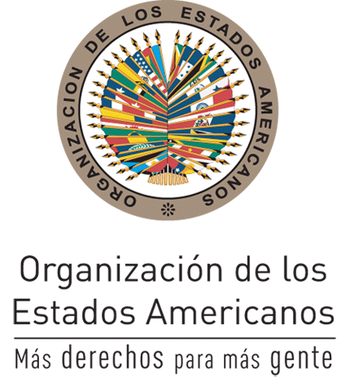
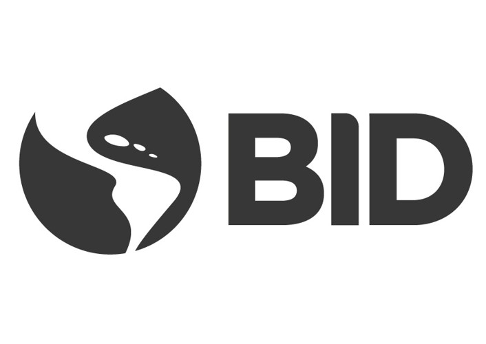
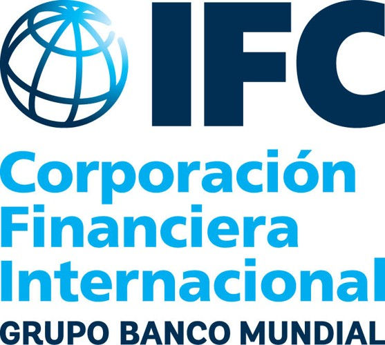
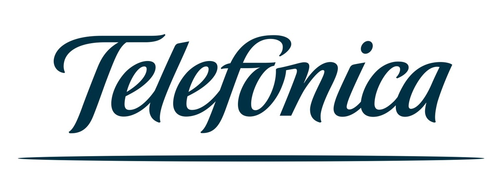
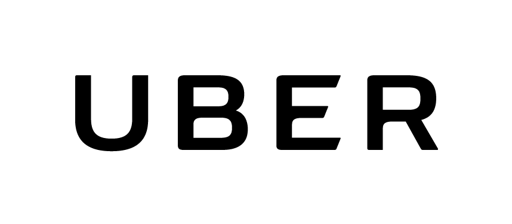
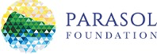

Leadership Multiplies Impact
One trained leader influences entire organizations, communities, and sectors — creating ripple effects that extend far beyond individual growth.
Founded in Washington D.C. in 2014, ALF bridges the gap between talent and opportunity — through executive training, trade missions, and international summits that shape the global agenda.
Established in Washington D.C. in 2014, ALF operates globally with offices in Madrid and Buenos Aires, building an international reputation as a platform for leadership, innovation, and cooperation.
Our purpose is simple yet ambitious: to close the gap between talent and opportunity. Across the globe, companies, governments, and institutions often struggle to find leaders with the right skills to meet today's complex challenges. At the same time, young professionals, entrepreneurs, and public servants seek meaningful opportunities to learn, to serve, and to grow.
ALF bridges this gap by creating programs that connect people, institutions, and markets — transforming potential into action and ideas into impact. Through executive training, certified trade missions, and landmark international summits, we have built a global ecosystem of leaders committed to building a more sustainable, inclusive, and innovative world.
After more than a decade, the lesson is clear: when vision, partnerships, and determination align, leadership becomes the most renewable resource we have.
One trained leader influences entire organizations, communities, and sectors — creating ripple effects that extend far beyond individual growth.
Real progress only occurs when governments, companies, academia, and civil society work together toward shared goals.
Leadership must transcend borders, uniting talent from different countries and cultures to respond to sustainability, innovation, and social inclusion.
Since 2014, all ALF initiatives have been structured around three essential areas that work together as a coherent model of lasting impact. Through leadership training, trade missions, and international summits, ALF connects people, institutions, and markets — turning talent into opportunity, ideas into action, and global conversations into durable partnerships.

Hands-on learning through internships, shadowing programs, executive courses and certificates that place participants in real leadership environments.

High-level delegations that connect U.S. business leaders, investors and institutions with regions seeking growth, visibility and long-term partnerships.

High-level gatherings that combine global relevance with local empowerment, turning dialogue into visibility, alliances and legacy.
ALF's impact would not be possible without the institutions, governments, foundations, universities, companies, and multilateral organizations that share our mission and bring it to life across five continents. Together, this network has helped us expand access to leadership opportunities, connect regions with international partners, and build platforms where public purpose and private initiative can generate lasting value.





